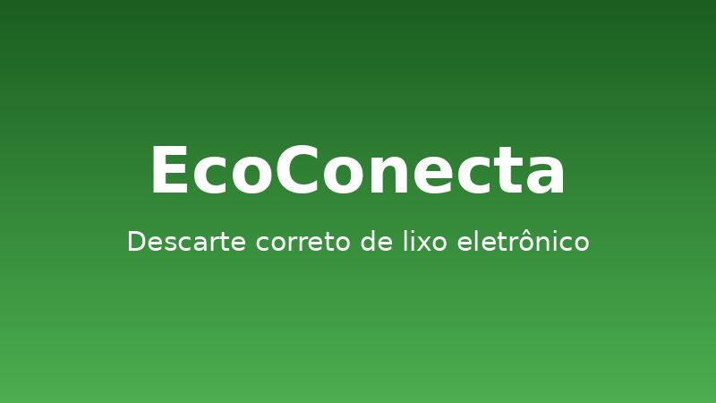

Missão
Informar e mobilizar a população para o descarte correto de eletroeletrônicos, facilitando o acesso a pontos de coleta e promovendo a economia circular.
Uma iniciativa estudantil que nasceu para enfrentar a crise do lixo eletrônico no Brasil.
A Recircuito foi fundada em 2024 por estudantes do Curso Superior de Informática da UNICID, no Tatuapé, em São Paulo. Tudo começou quando a turma percebeu quantos computadores, celulares e carregadores antigos ficavam esquecidos em gavetas — ou pior, terminavam no lixo comum.
Ao pesquisar o tema, descobrimos que o Brasil é o 5.º maior gerador de lixo eletrônico do mundo e o maior da América Latina, mas recicla formalmente uma fração muito pequena do que descarta. Faltava informação simples e acessível: onde levar? o que pode ser reaproveitado? quais os riscos?
Assim nasceu a Recircuito, uma organização sem fins lucrativos (fictícia, para fins acadêmicos) que usa a tecnologia para conectar pessoas, pontos de coleta e cooperativas de reciclagem.

Informar e mobilizar a população para o descarte correto de eletroeletrônicos, facilitando o acesso a pontos de coleta e promovendo a economia circular.
Ser, até 2030, a principal rede colaborativa de informação sobre lixo eletrônico do Brasil, acessível a todas as pessoas, inclusive pessoas com deficiência.
O projeto é desenvolvido por quatro integrantes, cada um responsável por uma frente do site:
| Nome completo | RGM | Função |
|---|---|---|
| Joaquim Martins Ferreira Neto | 47609630 | Líder técnico e JavaScript |
| Gabriel Cabrera Conceição | 47657499 | HTML semântico e acessibilidade |
| Guilherme Reis | 47513438 | CSS, identidade visual e deploy |
| Gabriel Franco | 47451289 | Conteúdo, documentação e testes |
Empresas e cooperativas (fictícias) que apoiam a destinação correta dos resíduos: